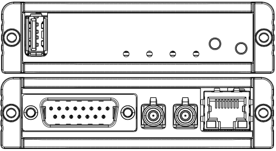

Platform MX-4 C61
Abstract
MX-4 C61 is a small form factor and low cost telematics computer for remote diagnostics and fleet management.
Feature summary for HM005-1
See Production variant definition.
| Feature | Summary |
|---|---|
| CPU (main) | ARM Cortex-A5, 500 MHz single core |
| CPU | ARM Cortex-M4, 167 MHz single core |
| Coprocessor | PIC24 |
| RAM | 512 MB flash, 256 MB RAM |
| Operating System | Yocto Kirkstone, Linux kernel 4.19 |
| Modem | Global 4G module |
| GPS | Included in modem, external antenna |
| Aux-Linux | 1x 3pol aux for Linux Headphone L and R with mic |
| Ethernet | 10BASE-T and 100BASE-TX Ethernet |
| USB | 1 x USB 2.0 high-speed host/device (auto detect) |
| CAN | 3 x CAN 2.0 B |
| RS485/J1708 | 1 x Rs-485 (or 1x J1708), product selection |
| RS-232 | 1 x Rs-232 |
| DIO-Analog | Combine digital in, out and analog in |
| Start Signals | 1 x Start signal input (to boot the system using external signal) |
| uSD-card | µSD-card interface |
| SuperCap | Super Capacitor |
| Operating Temperature | Wide operating temperature: -40 to +85°C |
| Operating voltage | Wide input voltage range, 8-36 VDC |
| Nominal Voltage | 12-24V |
| Sleep-Mode | Low power sleep mode |
Production Variant Definition
List of known products
| Products | Product part number | Description |
|---|---|---|
| Default | HM005-1 | 4G modem and SD card, only delivered with our reference BSP |
Connectors and buttons

Dsub 15 connector
| Pin | Function | Comment |
|---|---|---|
| 1 | CAN-1-H | |
| 2 | CAN-1-L | |
| 3 | CAN-2-H | |
| 4 | CAN-2-L | |
| 5 | CAN-3-H | |
| 6 | CAN-3-L | |
| 7 | INPUT-POWER | |
| 8 | GND | Reference for INPUT-POWER |
| 9 | DIG-IO-1 | Output with source and sink and/or analog in and/or digital in |
| 10 | RS-485 or J1708 | RS-485 TX or J1708A (default variant is RS-485 not J1708) |
| 11 | DIG-IO-2 | Output with source and sink and/or analog in and/or digital in |
| 12 | RS-485 or J1708 | RS-485 RX or J1708B (default variant is RS-485 not J1708) |
| 13 | START-SIGNAL | Must be tied to INPUT-POWER for the unit to start |
| 14 | RS-232_RXD | Rs-232 receive from pc (default debug) |
| 15 | RS-232_TXD | Rs-232 transmit from device to pc (default debug) |
| S | GND | The shield acts as a general-purpose GND |
Other connector and buttons
- Fakra red LTE/4G
- Fakra blue GPS
- RJ45
- Audio & mic
- Reset button
- LEDs
Technical specification
Contact support to receive the technical specification (1301-HM005-Technical-description) for this hardware.